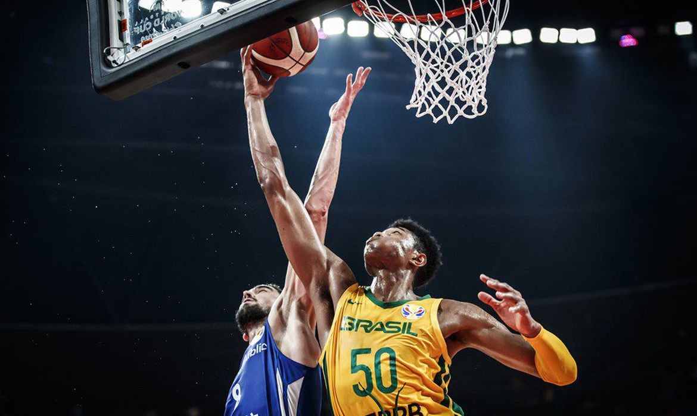

Esporte: Basquete
SOBRE O ESPORTE:
O basquetebol, ou simplesmente basquete, é um esporte coletivo praticado entre duas equipes. Ele é jogado com uma bola, onde o objetivo é inseri-la no cesto fixo que está localizado nas extremidades da quadra. Atualmente, o basquetebol é um dos jogos olímpicos mais populares no mundo. Nas escolas, é um dos esportes mais praticados nas aulas de educação física.
O esporte surgiu como uma alternativa ao inverno rigoroso da região, em detrimento dos outros praticados ao ar livre como o basebol e o futebol. Além disso, a ideia original era criar um esporte menos violento que o futebol americano. Aliado à isso, o professor criador pretendia integrar os alunos nas aulas de educação física e estimular a coletividade dos grupos.
Ao longo da história do basquete, muitos foram os jogadores que se destacaram. Alguns nomes ficaram marcados e serão lembrados por muitas gerações. A liga de basquete americana (NBA) eterniza alguns atletas em seu hall da fama. Outros, ainda em atividade, como LeBron James e Stephen Curry buscam entrar para esse seleto grupo, que conta com nomes como Michael Jordan, Magic Johnson e os brasileiros Hortência e Oscar.
Foto: Quadra de Basquete

Foto: "Enterrada" jogada do Basquete
Acesse meus Passeios
 Foto: Quadra de Basquete
Foto: Quadra de Basquete